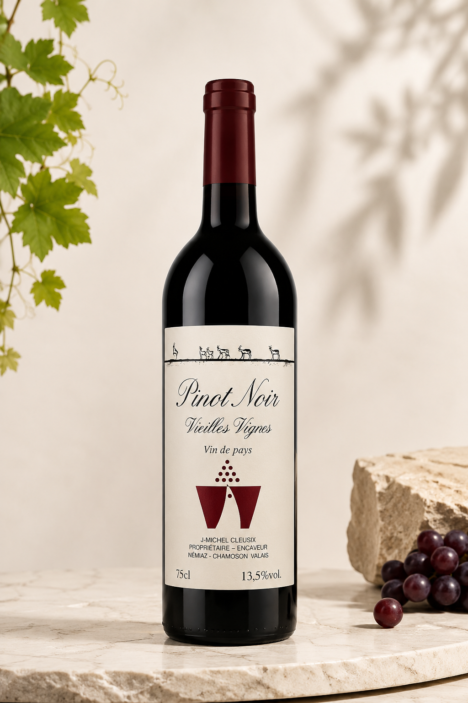

Pinot Noir
Vieilles Vignes
Vin rouge raffiné issu de vieilles vignes valaisannes. Élégant, fruité et harmonieux, parfait pour accompagner viandes rouges et fromages.
CHF 15.–
Prix affiché sur cavecleusix.ch
Achat en ligne : le bouton Shopify viendra ici.
Issu de nos plus anciennes parcelles situées au cœur du Valais, ce Pinot Noir révèle toute la finesse et l’élégance de ce cépage emblématique.
Élevé avec soin et respect de la tradition familiale, il séduit par sa robe rouge rubis intense et son nez délicat de fruits rouges (cerise, framboise) relevé de subtiles notes épicées.
En bouche, il offre une structure souple et harmonieuse, avec des tanins fins et une belle longueur. C’est un vin qui exprime la richesse du terroir valaisan et la profondeur de nos vieilles vignes.
Accords mets-vins : viandes rouges grillées, fromages à pâte dure, plats valaisans traditionnels.
Température de service : 14–16 °C. Garde : 3 à 5 ans.
- Mention
- Vin de pays
- Lieu
- Némiaz, Chamoson, Valais
- Format
- 75 cl
- Alcool
- 13,5 % vol.